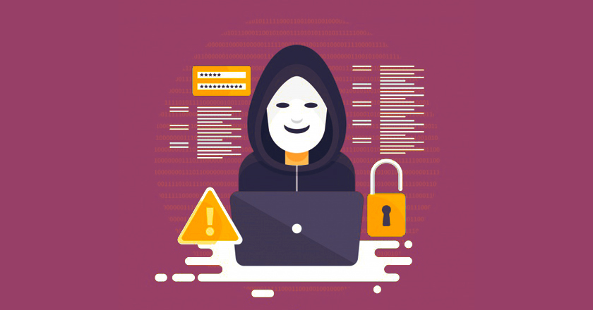

Мониторинг и аудит - Мониторинг позволяет отслеживать активность пользователей и обнаруживать потенциальные угрозы или необычное поведение. Аудит позволяет воссоздать последовательность событий и выявить возможные нарушения безопасности. Комбинация мониторинга и аудита позволяет быстро реагировать на инциденты безопасности и предотвращать утечку данных.
С ростом популярности облачных технологий все больше компаний используют облачное хранилище данных для хранения и обработки больших данных. Облачные решения предлагают ряд преимуществ, таких как масштабируемость, гибкость и снижение затрат на инфраструктуру. Однако облачное хранилище данных также представляет риски в виде возможной утечки данных или несанкционированного доступа. Для защиты больших данных в облаке необходимо использовать средства шифрования, контроля доступа и мониторинга, а также внимательно выбирать провайдера облачных услуг с учетом их уровня безопасности.
Кроме аутентификации, важным аспектом защиты больших данных является контроль доступа. Контроль доступа определяет, какие пользователи или устройства имеют разрешение на доступ к определенным данным или ресурсам. Это позволяет ограничить доступ к конфиденциальной информации только уполномоченным пользователям. Контроль доступа может быть реализован с использованием различных методов, таких как ролевые модели доступа, правила доступа на основе атрибутов или политики доступа.
Одним из основных методов защиты больших данных является шифрование. Шифрование позволяет преобразовать данные в нечитаемый формат, который может быть восстановлен только с использованием специального ключа. При хранении и передаче больших данных необходимо применять сильное шифрование, чтобы защитить информацию от несанкционированного доступа.
